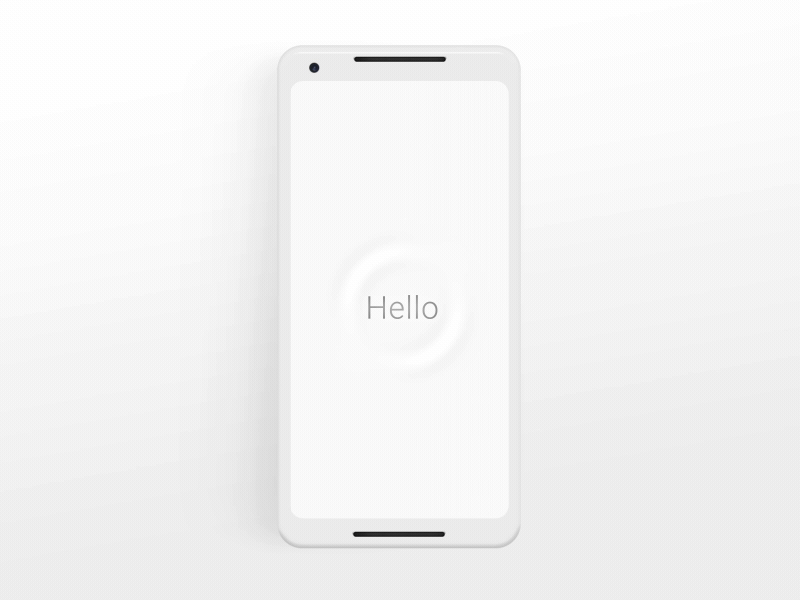

|
Las asistentes digitales con voz son programas de inteligencia
artificial (IA) que se han diseñado para reconocer y responder
a los comandos de voz y otras solicitudes de los usuarios en
lenguaje natural. Estos programas se pueden encontrar en una |

|
||||||||||||
|
||||||||||||||
|
||||||||||||||
Amazon Alexa: Es una asistente digital desarrollada por Amazon que se encuentra en la mayoría de los altavoces inteligentes de la empresa, y también se puede utilizar en otros dispositivos como tabletas y televisores . |
Google Assistant: Es una asistente digital desarrollada por Google que se encuentra en dispositivos Android, altavoces inteligentes, televisores y otros dispositivos inteligentes. |
Apple Siri: Es una asistente digital desarrollada por Apple que se encuentra en dispositivos iOS, así como en el HomePod y el Apple Watch. |
Microsoft Cortana: Es una asistente digital desarrollada por Microsoft que se puede utilizar en dispositivos con Windows 10, así como en algunos teléfonos móviles. |
ELIZA es un programa de software creado por Joseph Weizenbaum en la década de 1960. Se considera uno de los primeros chatbots y pionero en el procesamiento del lenguaje natural. ELIZA fue diseñado para simular una conversación terapéutica básica con los usuarios. |
Viv es un asistente virtual desarrollado por Dag Kittlaus, Adam Cheyer, y otros miembros del equipo original que crearon Siri. Fue presentado por primera vez en 2016 y posteriormente adquirido por Samsung. |